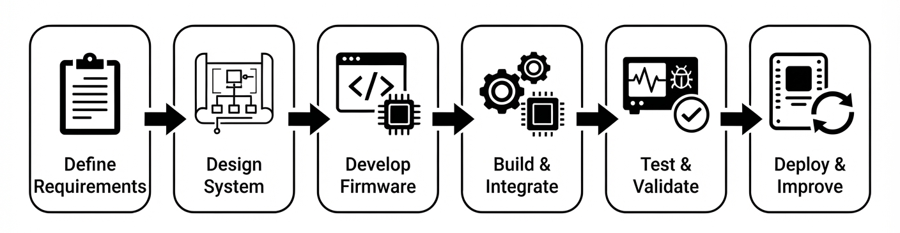

Essential Skills
Core skills to learn even if you believe AI can do everything.
OpenDesigning and developing an embedded product involves several stages. It starts with understanding the problem and defining the product requirements, followed by selecting the right hardware, developing firmware, interfacing software with hardware, and testing and verifying that the product works as expected.
This Bootcamp takes you through each stage of the firmware development journey using industry practices, modern development tools, AI-assisted workflows, and automation.
Follow step-by-step journey from Defining Requirements to Deploying using Industry best practices and workflows.

Through hands-on, project-based learning, explore how real-world embedded products are developed and build the skills to take your ideas from requirements to working Embedded products.